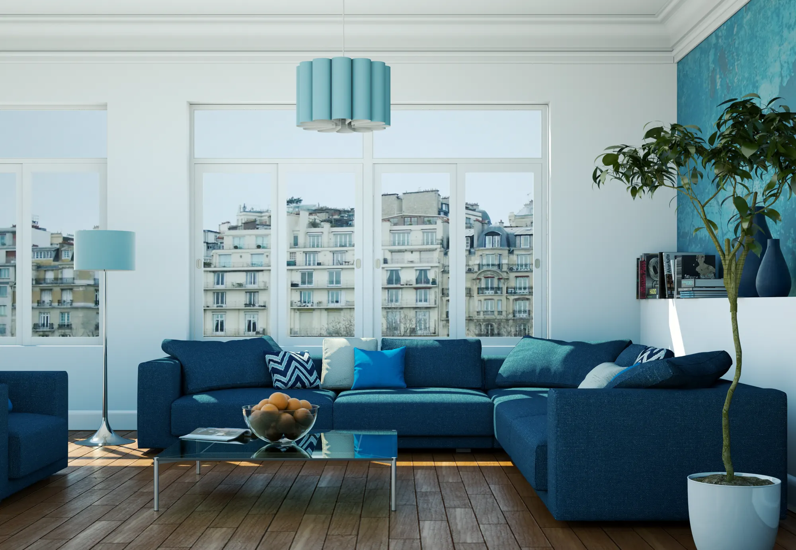

Vitrification de parquet à Paris
Un parquet qui retrouve sa chaleur et son éclat. Nous le révélons, le protégeons et le faisons durer.
Point de Hongrie, bâtons rompus, lames anciennes : le parquet est l’une des plus belles signatures des appartements parisiens. Nous le ponçons, le réparons et le vitrifions avec soin pour lui rendre sa beauté d’origine et le protéger pour de longues années.
